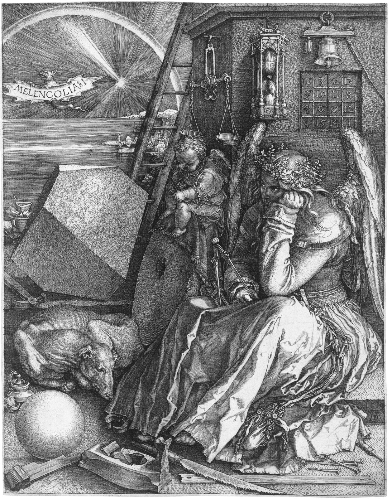

Evolución del arte tradicional hacia el arte digital.
Desde las cavernas hasta las pantallas, el arte ha sido una expresión fundamental de la creatividad humana a lo largo de la historia. Sin embargo, con el avance de la tecnología, el arte ha experimentado una transformación radical, que nos ha llevado al nacimiento del diseño digital.
LOS INICIOS
Cuando se habla de arte tradicional se refiere al arte clásico, el que se inició con el Renacimiento y empezó a debilitarse con la llegada de las nuevas vanguardias. El arte tradicional se refiere a una metodología de proceso creativo en la que se incluyen múltiples disciplinas, principalmente manuales. Estas se han desarrollado a lo largo de la historia y han sido transmitadas de generación en generación, creando así múltiples movimientos, los cuales reflejan perfectamente las inquietudes, conflictos políticos y sucesos de cada etapa histórica de la región donde se ha desarrollado.
Un viaje en el tiempo: El arte tradicional del Siglo XX
La tecnología ha resultado un descubrimiento que ha desembocado en un cambio radical en nuestra sociedad, afectando a la forma de pensar y de ver nuestro mundo. Y como era de esperar, también ha afectado considerablemente al arte y todo lo que lo envuelve. En este punto, se explicará como algunos de los movimientos vanguardistas se vieron afectados por la aparición de nuevas tecnologías, destacando especialmente la fotografía, y como los artistas reaccionaron a este suceso.
Todo comenzó a mediados del siglo XVIII, cuando la sociedad experimentaba cambios drásticos que venían motivados por la industrialización y las numerosas innovaciones tecnológicas y científicas. Paralelamente, el arte, también se vio afectado por esta evolución y experimentó avances. Se desarrollaron nuevas corrientes que rompían con lo académico, con sus normas y sus gustos, surgiendo así nuevas temáticas como la festiva o el paisaje. Fue gracias a esto, como, con la revolución francesa, se empezó a entrever el Arte Moderno. En este periodo se ve claramente como los avances tecnológicos ayudaban a abrir nuevas fronteras en el arte. Uno de ellos fue el perfeccionismo que adopto el grabado, el cual a finales de siglo se hizo más presente, llegando a ser masivo, como consecuencia de una mejora considerable en su técnica. También por esos años, apareció la litografía, la cual permitió usar el arte como arma masiva promoviendo la crítica. Este último, permitía la rotura entre el artista tradicional y el grabador.

Nuevos caminos para el mañana
Los últimos avances tecnológicos están abriendo caminos increíbles para los creadores. Hoy en día, las pantallas y las gafas de realidad virtual permiten a la gente meterse dentro de los cuadros e interactuar con los dibujos de una forma que antes era imposible, superando las barreras del papel o el lienzo de toda la vida.
Este cambio no ocurre por casualidad, sino porque la forma de dibujar ha ido evolucionando a través de tres grandes ideas que marcan el paso del lápiz a la pantalla:
- El cambio de materiales: Se ha dejado a un lado el lienzo físico y los botes de pintura para dibujar directamente en pantallas de ordenadores y tabletas que guardan el trabajo de forma electrónica.
- Pintar con herramientas modernas: Los programas actuales imitan tan bien el comportamiento de las pinturas de siempre que los artistas pueden seguir usando sus técnicas de toda la vida, pero sin mancharse las manos.
- Obras vivas: A diferencia de un cuadro tradicional que nunca cambia una vez terminado, las creaciones hechas en ordenador pueden moverse, reaccionar cuando alguien las toca o transformarse solas.
Las tres grandes etapas: Del color físico al ordenador
Si miramos atrás y vemos cómo han cambiado las herramientas de los pintores a lo largo del tiempo, podemos dividir este viaje en tres momentos clave:
- La época de las pinturas naturales: El trabajo puramente manual del arte clásico, donde se mezclaban polvos de la tierra, aceites y líquidos para pintar sobre tablas de madera o telas.
- La llegada de las máquinas y las fotos: Los inventos de los siglos XVIII y XIX, como las imprentas para copiar dibujos en masa y las primeras cámaras de fotos, que obligaron a los pintores a buscar nuevas formas de dibujar.
- El dibujo moderno en las pantallas: El momento actual, donde los lápices táctiles de los ordenadores copian el grosor, el brillo y la transparencia del óleo o la acuarela usando el lenguaje del ordenador.
En definitiva, vemos cómo las herramientas modernas han dado más libertad para crear y han cambiado la idea de lo que significa ser un artista, abriendo una nueva época llena de novedades. Te invitamos a acompañarnos en este viaje por el tiempo para descubrir cómo el arte se sigue transformando.
La Revolución Digital y los Primeros Gráficos
El arte digital ha revolucionado el mundo de las artes visuales en las últimas décadas. Desde sus humildes comienzos en los años 70 con gráficos computacionales básicos, ha evolucionado hasta convertirse en una forma de arte sofisticada que abarca diversas técnicas y medios. Hoy en día, los artistas digitales utilizan software avanzado para crear obras impresionantes que van desde ilustraciones hasta esculturas en 3D y animaciones complejas.
Innovación y Futuro
Las tecnologías emergentes como la realidad aumentada (AR) y la realidad virtual (VR) están abriendo nuevas posibilidades para el arte digital. Estas tecnologías permiten a los espectadores interactuar con las obras de arte de formas nunca antes posibles, creando experiencias inmersivas que trascienden las limitaciones del arte tradicional.
Descubrimos cómo la tecnología ha abierto nuevas fronteras creativas y ha desafiado las nociones tradicionales de lo que significa ser un artista, dando lugar a una nueva era de expresioón artística impulsada por la innovación digital. (Acompáñame a este viaje a través del tiempo y el espacio, donde exploraremos el pasado, el presente y el futuro del arte en su forma más vanguardista.).
El fluir de los trazos
Video Pixelar - "The Legend of Zelda but it's piano"
<<Al principo, los arqueólogos se negaban a creer que aquellas vividas y realistas representaciones de animales pudieran haber sido hechas por hombres de la Edad de Hielo>>.